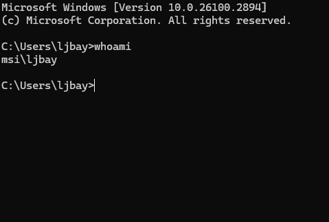

This handbook will help you set up your own VM
A host system running a good linux distro (Debian, Arch, etc. UBUNTU SUCKS!!!!!!!!) or Windows 10+ (I use Windows 11 personally)
VMWare Version 15 or newer (I use version 17.5, Virtualbox is accepted but frowned upon. NO QEMU/PARALELLS/HYPER-V.)
A good amount of RAM and a good enough CPU(8+ GB, Intel Core i5/AMD Ryzen 5 or newer)
An ISO of Windows (Has to be Windows 7 or later (For Windows Server its Windows Server 2012 and up))
Decent Internet (In the US some decent plans are Verizon, T-Mobile, and AT&T. I use Verizon 5G Internet)
A Discord account
A good reputation in the LJ-VM community
If you have those things you may continue.
1. Press Ctrl+N to create a virtual machine
2. Choose "Custom (advanced)" and click next.
3. Set the hardware compatibility to the highest supported.
4. Click "I will install the operating system later." This bypasses VMWare's dumb Quick Install feature.
5. For the guest operating system choose "Microsoft Windows" and in the dropdown menu choose the version you are installing.
6. Name your virtual machine. This can be anything.
7. If you are doing Windows 7-10 or Windows Server 2012-2022 click BIOS. If you are doing Windows 11 or Windows Server 2025 choose UEFI.
8. Choose your processors. A good amount would be 4 processors with 2 cores in each.
9. Set your RAM. I usually go with 3GB (3072 MB) but anything up to 12GB would be a good amount.
10. Choose NAT as your network.
11. Whatever I/O Controller type that VMWare defaults to is probably the one you want to select.
12. Same thing here. Whichever hard drive type VMWare defaults to is most likely the one you want to use.
13. Select "Create a new virtual disk."
14. Your disk size should be 60-120 GB in size. I usually go with 75 GB.
15. Name your disk file whatever you want.
16. Finally, click "Finish" and wait for your VM to be created.
Good job for getting to this point, now you have to configure your VM.
The first thing you want to do is go to your VM Settings, select the disk, and insert the ISO file.
After doing that, you can boot up your VM.
Once the VM appears with the Windows install screen, continue installing Windows.
At some point after installing, it will ask you for customization settings, username, etc.
Username can be whatever you want, you can make it funny though
The password must be "1" for the vm (no quotes)
For activation you don't have to do that but IT IS recommended especially since you can easily find product keys online.
Once you get on the Windows desktop you need to do some things:
1. Install a decent browser (for the love of god no Microsoft Edge or any type of Opera please)
2. Install Anydesk, Rustdesk, and Teamviewer.
Once that is done you have to configure Anydesk, Rustdesk, and Teamviewer.
For the remote access programs you need to set a password, and configure default unattended access settings.
A good password for one of them would be something like "[YourNameHere]-Vm[Number]-[RemoteToolsName]"
An example of a password thats configured properly would be something like John-Vm1-Rustdesk
Once you are done changing the password, configure access settings.
You need to make sure that atleast file transfers, remote restart, block user input, privacy mode, and clipboard access are disabled.
Important: YOU SHOULD USE A VPN. Good VPNs include ExpressVPN (my favorite), NordVPN, and Surfshark. If you don't use a VPN during VM operation you have a high chance of getting doxxed.
Also please note that YOU are in charge of moderating the VMs. If somebody breaks the rules, it is your job to get the VM under control.
Once you are done with that you can move on to the second-to-last section.
To spice up your VM, you can add some extra stuff to it such as:
A cool wallpaper or theme
Some harmless PUPs (such as Systweak's Regclean Pro or Bit Driver Updater)
Nice programs/bloat (e.g. Notepad++, Visual Studio, etc.)
If its Windows 8.x then Classic Shell
If you want to you can antiforkie the VM
Some games
FINAL STEP! Congrats
The final thing you have to do before your VM is public is DM lj802921 on Discord with the following:
Your preferred name (for example if you said John then your VM's name on the website would be JohnVM1.)
Windows OS Type
Anydesk ID and Password
Rustdesk ID and Password
Teamviewer ID and Password
If its a Windows Server VM then you need to provide the FULL username by running "whoami" in the command prompt and then giving me the answer (ex: msi\ljbay)
The time that your VM will run in EST (-5:00) format.
And finally, any additional notes for the VM along with a basic description of it. (ex: This is a simulated Windows 7 VM. Installed programs include Adobe Reader 9, and Quick Time Player among other things.)
Congrats! You have successfully set up your very own LuserVM! Now go touch grass
Guide written by LJ9859 on 2-11-2025